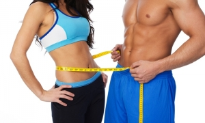

FitСніданок
Смачний і правильний сніданок - це запорука прекрасного дня!
Детальніше
FitОбід
Ситний і корисний обід -
подарує енергію для веселого вечора!
Детальніше
FitВечеря
Низькокалорійний вечерю -
прокинься худий і бадьорою!
Детальніше
Розрахунок калорій
Знайди своє ідеальне кількість і худни легко!
Детальніше
Що таке FitFood?
"FitFood" допоможе схуднути легко і правильно! Забудь про жорстких дієтах і голодуванні! Наші рецепти допоможуть насититися і отримати справжнє задоволення.
Прочитай перед тим як з'їсти пончик!
Не перетворюйте схуднення в боротьбу. Зациклюючись на своїх формах і бажанні прибрати злощасні кілограми, ви нічого не доб'єтеся. Ви не втечете від себе :) Чим суворіше і виснажливих дієт, тим зазвичай вона менш ефективна. В результаті дієта і навантаження викликають огиду і неприйняття. І ви кидаєте затію про гарну фігуру, вважаючи себе слабкою, звинувачуючи в цьому зайнятість, природу, некомпетентність тренерів.
Худнути треба з судовольствием! Повір, навіть найсмачніший пончик не варто сліз потім! Потерпи, досягну Ідеальна себе і з правильним харчуванням зайві кілограмів вже не повернутися! Тільки уяви вечірній пончик НЕ прнесут тобі ні сантиметра на талії і стегнах! Хіба це не варто того щоб потерпіти?
На що варто звернути увагу при створенні «проекту схуднення»?
Проблеми та їх рішення

Для початку на нас! Правильне харчування - вже запорука успіху!
1. Зверніть увагу на те, що починати фізичні навантаження потрібно з невеликих повторень і поступово їх збільшувати.
Необхідно переглянути свій раціон харчування - зменшити кількість вуглеводів, вживати більше овочів і фруктів, пити 2 л води щодня. Пам'ятайте, що «Їжа - це важлива частина збалансованої дієти» - Фран Лебовіц.
2. Не заганяйте себе в жорсткі рамки, ставте посильні цілі.
3. Зменшіть розрив між прийомами їжі - бажано їсти кожні 2-3 години.
4. Включіть в раціон обов'язкові сніданки.
5. Не забувайте про здоровий повноцінний сон.
6. Головне в схудненні - послідовність.
І пам'ятайте, що «Худнуть, коли їжа стає не найголовнішою радістю в житті» (Гофф Інна). Радуйте себе! І нехай вам допоможе ваша сильна мотивація для схуднення!
Не перетворюйте схуднення в боротьбу. Зациклюючись на своїх формах і бажанні прибрати злощасні кілограми, ви нічого не доб'єтеся. Ви не втечете від себе :) Чим суворіше і виснажливих дієт, тим зазвичай вона менш ефективна. В результаті дієта і навантаження викликають огиду і неприйняття. І ви кидаєте затію про гарну фігуру, вважаючи себе слабкою, звинувачуючи в цьому зайнятість, природу, некомпетентність тренерів.
Проблеми та їх рішення
1. Зверніть увагу на те, що починати фізичні навантаження потрібно з невеликих повторень і поступово їх збільшувати.
Необхідно переглянути свій раціон харчування - зменшити кількість вуглеводів, вживати більше овочів і фруктів, пити 2 л води щодня. Пам'ятайте, що «Їжа - це важлива частина збалансованої дієти» - Фран Лебовіц.
2. Не заганяйте себе в жорсткі рамки, ставте посильні цілі.
3. Зменшіть розрив між прийомами їжі - бажано їсти кожні 2-3 години.
4. Включіть в раціон обов'язкові сніданки.
5. Не забувайте про здоровий повноцінний сон.
6. Головне в схудненні - послідовність.
І пам'ятайте, що «Худнуть, коли їжа стає не найголовнішою радістю в житті» (Гофф Інна). Радуйте себе! І нехай вам допоможе ваша сильна мотивація для схуднення!
Останні новинки
Нові рецепти і поради
Омлет з морквою
Морква очистити, натерти на дрібній тертці і додати в збиті в окремій мисці яйця.....
Детальніше
Омлет з зеленої стручкової квасолею
Дрібно нарізати квасоля і злегка обсмажити її в оливковій олії на сковороді з антипригарним.....
Детальніше